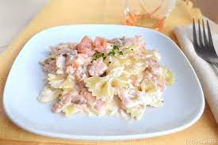

Pasta with salmon

Pasta with salmon, the easy way to eat fish
Three persons ingredients
- butterfly pasta: 350g
- fresh liquid cream 200g
- golden onion 1/2
- oil j.e.
- smoked salmon 400g
- brandy 50g
- parsley j.e.
- black pepper j.e.
STEPS
- Bring a pot of water to a boil to cook the pasta and add salt to the boil.
Cut the salmon into strips
- Clean and finely chop the onion and parsley
- Heat the oil in a pan and fry the onion, then add the salmon and turn up the heat
- After having sautéed the salmon for a few minutes,
blend with the brandy and let it evaporate completely, then turn off the heat.
- At this point the water will have come to a boil,
so add salt and cook the butterfly pasta for the time indicated on the package
- Meanwhile, pour the cream into the pan with the salmon, always with the heat off
- When the pasta is cooked, drain and transfer them directly to the pan
- Turn the heat back on and mix everything well to reduce the sauce
- Complete with the chopped parsley and a sprinkle of pepper